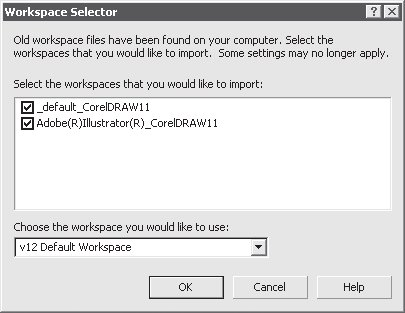

Лекция 2: Установка программы
Системные требования
Операционная система
Поклонников Windows 98 придется сильно огорчить — CorelDRAW 12 работает только с полностью 32-битными операционными системами:
Windows 2000 (с установленным четвертым пакетом обновлений);
Windows XP (с установленным первым пакетом обновлений).
В связи с этим многим придется сменить операционную систему. Это, как правило, связано и с модернизацией самого компьютера — ведь Windows XP требуется намного больше памяти, чем Windows 98.
Мы можем обрадовать только одним — работать станет намного лучше, система перестанет зависать каждые пять минут, и вы получите доступ к полезным возможностям Windows XP, о которых можно только мечтать, работая в Windows 98.
Процессор
Минимальный процессор (определенный разработчиками CorelDRAW), который сможет работать с этим графическим пакетом — Pentium с тактовой частотой 200 МГц. Однако поспешим вас огорчить — на практике это не так. Реально самый слабый процессор для работы с CorelDRAW 12 — это Pentium II с частотой выше 600 МГц. Полностью комфортная работа будет обеспечена только на новейших процессорах, частота которых более 2000 МГц.
Оперативная память
Программе CorelDRAW 12 было бы вполне достаточно 128 Мбайт оперативной памяти. Однако не забывайте о том, что программа работает только в современных операционных системах Windows 2000 и Windows XP, которые являются требовательными к объему памяти. Поэтому лучше ориентироваться на 256 Мбайт.Если же вы планируете запускать одновременно несколько графических приложений, например, CorelDRAW и Photoshop, лучше сразу приобрести 512 Мбайт оперативной памяти.
Жесткий диск
Для установки программы CorelDRAW потребуется около 250 Мбайт свободного места на жестком диске. Если же вы планируете использовать весь пакет CorelDRAW Graphics Suite, то выделяйте сразу около 500 Мбайт. Также не забывайте о том, что при работе CorelDRAW активно использует жесткий диск для хранения временных файлов, поэтому лучше, чтобы на вашем системном диске было хотя бы несколько гигабайт свободного места.
Монитор
Поспешим огорчить обладателей раритетов, работающих в разрешении 800x600 (если такие есть среди любителей компьютерной графики): минимальное разрешение для работы с CorelDRAW 12 — это 1024x768.Для действительно комфортной работы даже этого разрешения будет недостаточно.
Манипулятор
Обязательно наличие мыши или любого устройства, способного ее заменять (например, графического планшета). Также CorelDRAW 12 отлично работает с планшетными компьютерами, существует поддержка Windows XP Tablet Edition.
Если ваш компьютер соответствует перечисленным системным требованиям,можно смело переходить к установке программы, если не соответствует — лучше предварительно произвести модернизацию или использовать более ранние версии CorelDRAW.
Подготовка к установке
Прежде всего нужен дистрибутив программы. Вы можете добыть его многими способами, но помните — использование пиратского программного обеспечения это не только незаконно, но и аморально. Авторы предлагают куда более оптимальный вариант. Каждый желающий может скачать пробную версию описываемого графического пакета с сайта компании Corel (www.corel.com). Она полностью функциональна и использование ее законно в течение 30 дней. По истечении этого срока у вас будет три варианта возможных действий:
купить CorelDRAW 12. Если вам этот пакет понравится и будет нужен в работе, то вы сможете без особых проблем его купить. Цена его совсем невысока(если сравнивать, например, с продуктами Adobe), но вы получите полный и законный доступ ко многим возможностям — например, коллекции картинок в Интернете, состоящей из нескольких тысяч изображений;
отказаться от дальнейшего использования программы;
пойти против закона и морали и узнать в Интернете лицензионный номер, который превратит вашу пробную версию в полнофункциональный пакет.
Дистрибутив лучше переписать с компакт-диска на винчестер. Это ускорит установку пакета и сделает этот процесс более стабильным.
Закройте все активные приложения. Особое внимание обратите на то, чтобы антивирусы (например, "Касперский" или Dr. Web) были отключены. Эти программы сканируют все файлы, которые копируются на диск, на наличие вирусов и этo может значительно замедлить установку, а в отдельных случаях сделать ее невозможной.
Учетная запись, под которой вы работаете, должна иметь права администратора.Если это домашний компьютер, то так, скорее всего, и будет. Но если вы собираетесь устанавливать CorelDRAW 12 на рабочий компьютер, входящий в локальную сеть, то лучше предварительно проконсультироваться с системным администратором.
Лучше удалить все файлы из папки временных файлов (C:\Documents and Settings\(Eiy aeoeaiiai iieuciaaoaey)\Local Settings\Temp). Это позволит избежать конфликтов и сбоев при установке CorelDRAW 12. Если все вышеперечисленные рекомендации выполнены, можно переходить к установке пакета.
Установка CorelDRAW Graphics Suite
Запустите файл установки CorelDRAW Graphic Suite. Возможно, после этого некоторое время нужно будет подождать, если у вас в системе не самая последняя версия программы Installer, пока программа установки обновит ее.
В первом появившемся окне вам предложат выбрать, куда именно устанавливать программу (рис. 2.1).
Рис. 2.1. Указываем, куда устанавливать CorelDRAW
Путь, показанный в нашем случае, является вариантом по умолчанию. Почти всегда лучше придерживаться его — во всяком случае, вы можете быть уверены, что никаких конфликтов версий CorelDRAW при этом не произойдет. Но могут быть и исключения. Например, у вас на диске C слишком мало свободного места.
Тогда, конечно, лучше выбрать другой логический диск. После того как вы нажмете Next (Далее), откроется окно, показанное на рис. 2.2, и программа установки достаточно долго будет распаковывать архив во временные файлы. Еще раз проверьте, отключили ли вы антивирусные программы на своем компьютере. Если этого не сделано, процесс установки может занять до получаса и даже прерваться.
Рис. 2.2. Программа установки распаковывает архив и сохраняет временные файлы
После окончания копирования временных файлов откроется окно, показанное на рис. 2.3. Для всех законопослушных пользователей это главный момент установки программы. В нем производитель CorelDRAW оговаривает свои и ваши права,а также обязанности.
Лучше прочитать этот текст, так как вам в любом случае придется с ним согласиться, установив переключатель в положение I accept the terms in the license agreement (Я согласен с условиями лицензионного соглашения), иначе продолжить установку программы не получится.
В следующем окне (рис. 2.4), которое откроется после нажатия кнопки Next (Далее), нужно указать некоторые личные данные.
Мы использовали легальную пробную версию программы, поэтому нам пришлось заполнить только два пункта:
User Name (Имя пользователя);
Organization (Организация).
Рис. 2.3. Правила лицензии
Рис. 2.4. Указываем сведения о себе
Вам же, скорее всего, придется ввести еще и серийный номер программы, который вы найдете на специальном сертификате.
Следующее окно является очень важным. В нем вы указываете, какие именно приложения из пакета CorelDRAW Graphics Suite и их компоненты вам нужны. Опишем основные средства, входящие в пакет Graphic Suite:
CorelDRAW — главная программа пакета, которой посвящена эта книга;
Corel PHOTO-PAINT — редактор растровой графики. Неплохая программа, отлично работающая как вспомогательное средство для Photoshop, которая, все-таки, намного удобнее при работе с растровыми изображениями;
Corel R.A.V.E — программа для создания несложных презентаций и Flash-анимаций. Авторы не видели ни одного человека, активно использующего RAVE;
CorelTRACE — программа для преобразования растровой графики в векторную. Это очень нужная и важная задача, поэтому обязательно установите это приложение;
Corel CAPTURE — небольшая утилита для оптимизации работы со снимками окон. Незаменимая программа для тех, кто пишет руководства по программным продуктам;
Bitstream Font Navigator — программа для управления шрифтами. Не самая лучшая или удобная, зато в комплекте — не нужно искать другую;
Corel Update — приложение для скачивания через Интернет обновлений для программ пакета CorelDRAW Graphics Suite.
Если какое-то из перечисленных приложений вам явно не понадобится в работе,исключите его из списка установки. Несколько сложнее с тем, как выбрать нужные компоненты для тех программ, которые вы решили установить. Авторы предлагают для этого простой вариант. Современные жесткие диски достаточно объемные и 30–50 Мбайт ничего не решают. Поэтому просто устанавливайте все, что относится к нужной программе.
Не забудьте установить поддержку русского языка для набора текста (рис. 2.5).Она включает в себя средства проверки грамотности и расстановки переносов.Согласитесь, это нужно почти всем работающим в CorelDRAW на территории России и других стран СНГ.
Если в описываемом диалоговом окне установлен флажок Automatically check for product updates (Автоматически проверять наличие обновлений), то во время установки программа проверит, появились ли обновления для данного дистрибутива.
Разумеется, эта возможность полезна только счастливым обладателям выделенного канала доступа в Интернет — вы же не будете часами ждать, когда скачаются все нужные файлы, если у вас подключение к Интернету при помощи модема через телефонную линию.
В следующем окне (рис. 2.6) программа установки покажет, сколько места на диске займет выбранное вами количество компонентов и предложит или продолжить установку в выбранную ранее директорию, или определить другую. Нам места на диске хватает, поэтому никаких изменений произведено не было.
После этого начнется непосредственно установка программных файлов на жесткий диск (рис. 2.7). Процесс займет около 3–5 мин. на маломощном компьютере или медленном (например, слишком фрагментированном) жестком диске. Вам придется просто подождать.
Рис. 2.5. При выборочной установке не забудьте добавить поддержку русского языка
Рис. 2.6. Вторая возможность выбрать директорию для установки
После окончания копирования файлов на жесткий диск вам предложат зарегистрировать данную копию программы (рис. 2.8). Если у вас лицензионная или пробная версия программы, то это желательно сделать. Во-первых, в этом случае вы получите доступ ко многим полезным ресурсам — обновлениям, руководствам,советам и пр. Во-вторых, регистрация — это правило хорошего тона для каждого современного пользователя, элемент деловой культуры.
Рис. 2.7. Программа установки копирует файлы на жесткий диск
Рис. 2.8. Окно для регистрации
В случае использования пиратской копии регистрацию лучше отложить на "когда-нибудь потом", выбрав пункт Register Later (Зарегистрироваться позже).
Последнее окно (рис. 2.9) в процессе установки откроется только в случае, если на вашем компьютере были установлены более ранние версии Corel Graphic Suite.В нем можно выбрать, какие стили оформления рабочего пространства импортировать в свежеустановленную программу. Стили позволяют оптимизировать интерфейс под привычки каждого пользователя. Наиболее популярны стили, имитирующие Adobe Illustrator и Microsoft Office.
В списке Choose the workspace you would like to use (Выберите, какой стиль рабочей области вы будете использовать) окна Workspace Selector (Выбор рабочей области) выберите строку V12 Default Workspace — именно для такого стиля рабочего пространства написан этот курс.
Рис. 2.9. Выберите V12 Default Workspace для того, чтобы интерфейс программы полностью совпадал с описанным в книге
Мы рекомендуем перезагрузить компьютер. Это не обязательно, но значительно ускорит работу приложений.
На этом установка CorelDRAW Graphics Suite полностью выполнена.